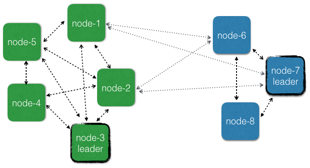

Multi-DC Cluster
You are viewing the documentation for the new actor APIs, to view the Pekko Classic documentation, see Classic Multi-DC Cluster
This chapter describes how Pekko Cluster can be used across multiple data centers, availability zones or regions.
The reason for making the Pekko Cluster aware of data center boundaries is that communication across data centers typically has much higher latency and higher failure rate than communication between nodes in the same data center.
However, the grouping of nodes is not limited to the physical boundaries of data centers, even though that is the primary use case. It could also be used as a logical grouping for other reasons, such as isolation of certain nodes to improve stability or splitting up a large cluster into smaller groups of nodes for better scalability.
Dependency
To use Pekko Cluster add the following dependency in your project:
- sbt
val PekkoVersion = "2.6.20+81-523134c3+20230202-1514-SNAPSHOT" libraryDependencies += "org.apache.pekko" %% "pekko-cluster-typed" % PekkoVersion- Maven
<properties> <scala.binary.version>2.13</scala.binary.version> </properties> <dependencyManagement> <dependencies> <dependency> <groupId>org.apache.pekko</groupId> <artifactId>pekko-bom_${scala.binary.version}</artifactId> <version>2.6.20+81-523134c3+20230202-1514-SNAPSHOT</version> <type>pom</type> <scope>import</scope> </dependency> </dependencies> </dependencyManagement> <dependencies> <dependency> <groupId>org.apache.pekko</groupId> <artifactId>pekko-cluster-typed_${scala.binary.version}</artifactId> </dependency> </dependencies>- Gradle
def versions = [ ScalaBinary: "2.13" ] dependencies { implementation platform("org.apache.pekko:pekko-bom_${versions.ScalaBinary}:2.6.20+81-523134c3+20230202-1514-SNAPSHOT") implementation "org.apache.pekko:pekko-cluster-typed_${versions.ScalaBinary}" }
Motivation
There can be many reasons for using more than one data center, such as:
- Redundancy to tolerate failures in one location and still be operational.
- Serve requests from a location near the user to provide better responsiveness.
- Balance the load over many servers.
It’s possible to run an ordinary Pekko Cluster with default settings that spans multiple data centers but that may result in problems like:
- Management of Cluster membership is stalled during network partitions as described in a separate section below. This means that nodes would not be able to be added and removed during network partitions between data centers.
- More frequent false positive failure detection for network connections across data centers. It’s not possible to have different settings for the failure detection within vs. across data centers.
- Downing/removal of nodes in the case of network partitions should typically be treated differently for failures within vs. across data centers. For network partitions between data centers the system should typically not down the unreachable nodes, but instead wait until it heals or a decision is made by a human or external monitoring system. For failures within same data center automatic, more aggressive, downing mechanisms can be employed for quick fail over.
- Quick fail over of Cluster Singleton and Cluster Sharding from one data center to another is difficult to do in a safe way. There is a risk that singletons or sharded entities become active on both sides of a network partition.
- Lack of location information makes it difficult to optimize communication to prefer nodes that are close over distant nodes. E.g. a cluster aware router would be more efficient if it would prefer routing messages to nodes in the own data center.
To avoid some of these problems one can run a separate Pekko Cluster per data center and use another communication channel between the data centers, such as HTTP, an external message broker. However, many of the nice tools that are built on top of the Cluster membership information are lost. For example, it wouldn’t be possible to use Distributed Data across the separate clusters.
We often recommend implementing a micro-service as one Pekko Cluster. The external API of the service would be HTTP, gRPC or a message broker, and not Pekko Remoting or Cluster (see additional discussion in When and where to use Pekko Cluster).
The internal communication within the service that is running on several nodes would use ordinary actor messaging or the tools based on Pekko Cluster. When deploying this service to multiple data centers it would be inconvenient if the internal communication could not use ordinary actor messaging because it was separated into several Pekko Clusters. The benefit of using Pekko messaging internally is performance as well as ease of development and reasoning about your domain in terms of Actors.
Therefore, it’s possible to make the Pekko Cluster aware of data centers so that one Pekko Cluster can span multiple data centers and still be tolerant to network partitions.
Defining the data centers
The features are based on the idea that nodes can be assigned to a group of nodes by setting the pekko.cluster.multi-data-center.self-data-center configuration property. A node can only belong to one data center and if nothing is specified a node will belong to the default data center.
The grouping of nodes is not limited to the physical boundaries of data centers, even though that is the primary use case. It could also be used as a logical grouping for other reasons, such as isolation of certain nodes to improve stability or splitting up a large cluster into smaller groups of nodes for better scalability.
Membership
Some membership transitions are managed by one node called the leader. There is one leader per data center and it is responsible for these transitions for the members within the same data center. Members of other data centers are managed independently by the leader of the respective data center. These actions cannot be performed while there are any unreachability observations among the nodes in the data center, but unreachability across different data centers don’t influence the progress of membership management within a data center. Nodes can be added and removed also when there are network partitions between data centers, which is impossible if nodes are not grouped into data centers.

User actions like joining, leaving, and downing can be sent to any node in the cluster, not only to the nodes in the data center of the node. Seed nodes are also global.
The data center membership is implemented by adding the data center name prefixed with "dc-" to the roles of the member and thereby this information is known by all other members in the cluster. This is an implementation detail, but it can be good to know if you see this in log messages.
You can retrieve information about what data center a member belongs to:
- Scala
-
source
val cluster = Cluster(system) // this node's data center val dc = cluster.selfMember.dataCenter // all known data centers val allDc = cluster.state.allDataCenters // a specific member's data center val aMember = cluster.state.members.head val aDc = aMember.dataCenter - Java
-
source
final Cluster cluster = Cluster.get(system); // this node's data center String dc = cluster.selfMember().dataCenter(); // all known data centers Set<String> allDc = cluster.state().getAllDataCenters(); // a specific member's data center Member aMember = cluster.state().getMembers().iterator().next(); String aDc = aMember.dataCenter();
Failure Detection
Failure detection is performed by sending heartbeat messages to detect if a node is unreachable. This is done more frequently and with more certainty among the nodes in the same data center than across data centers. The failure detection across different data centers should be interpreted as an indication of problem with the network link between the data centers.
Two different failure detectors can be configured for these two purposes:
pekko.cluster.failure-detectorfor failure detection within own data centerpekko.cluster.multi-data-center.failure-detectorfor failure detection across different data centers
When subscribing to cluster events the UnreachableMember and ReachableMember events are for observations within the own data center. The same data center as where the subscription was registered.
For cross data center unreachability notifications you can subscribe to UnreachableDataCenter and ReachableDataCenter events.
Heartbeat messages for failure detection across data centers are only performed between a number of the oldest nodes on each side. The number of nodes is configured with pekko.cluster.multi-data-center.cross-data-center-connections. The reason for only using a limited number of nodes is to keep the number of connections across data centers low. The same nodes are also used for the gossip protocol when disseminating the membership information across data centers. Within a data center all nodes are involved in gossip and failure detection.
This influences how rolling updates should be performed. Don’t stop all of the oldest that are used for gossip at the same time. Stop one or a few at a time so that new nodes can take over the responsibility. It’s best to leave the oldest nodes until last.
See the failure detector for more details.
Cluster Singleton
The Cluster Singleton is a singleton per data center. If you start the ClusterSingletonManager on all nodes and you have defined 3 different data centers there will be 3 active singleton instances in the cluster, one in each data center. This is taken care of automatically, but is important to be aware of. Designing the system for one singleton per data center makes it possible for the system to be available also during network partitions between data centers.
The reason why the singleton is per data center and not global is that membership information is not guaranteed to be consistent across data centers when using one leader per data center and that makes it difficult to select a single global singleton.
If you need a global singleton you have to pick one data center to host that singleton and only start the ClusterSingletonManager on nodes of that data center. If the data center is unreachable from another data center the singleton is inaccessible, which is a reasonable trade-off when selecting consistency over availability.
The singleton proxy is by default routing messages to the singleton in the own data center, but it can be started with a dataCenter parameter in the ClusterSingletonProxySettings to define that it should route messages to a singleton located in another data center. That is useful for example when having a global singleton in one data center and accessing it from other data centers.
This is how to create a singleton proxy for a specific data center:
- Scala
-
source
val singletonProxy: ActorRef[Counter.Command] = ClusterSingleton(system).init( SingletonActor(Counter(), "GlobalCounter").withSettings(ClusterSingletonSettings(system).withDataCenter("dc2"))) - Java
-
source
ActorRef<Counter.Command> singletonProxy = ClusterSingleton.get(system) .init( SingletonActor.of(Counter.create(), "GlobalCounter") .withSettings(ClusterSingletonSettings.create(system).withDataCenter("B")));
If using the own data center as the withDataCenter parameter that would be a proxy for the singleton in the own data center, which is also the default if withDataCenter is not given.
Cluster Sharding
The coordinator in Cluster Sharding is a Cluster Singleton and therefore, as explained above, Cluster Sharding is also per data center. Each data center will have its own coordinator and regions, isolated from other data centers. If you start an entity type with the same name on all nodes and you have defined 3 different data centers and then send messages to the same entity id to sharding regions in all data centers you will end up with 3 active entity instances for that entity id, one in each data center. This is because the region/coordinator is only aware of its own data center and will activate the entity there. It’s unaware of the existence of corresponding entities in the other data centers.
Especially when used together with Pekko Persistence that is based on the single-writer principle it is important to avoid running the same entity at multiple locations at the same time with a shared data store. That would result in corrupt data since the events stored by different instances may be interleaved and would be interpreted differently in a later replay. For replicated persistent entities see Replicated Event Sourcing.
If you need global entities you have to pick one data center to host that entity type and only start ClusterSharding on nodes of that data center. If the data center is unreachable from another data center the entities are inaccessible, which is a reasonable trade-off when selecting consistency over availability.
The Cluster Sharding proxy is by default routing messages to the shard regions in their own data center, but it can be started with a data-center parameter to define that it should route messages to a shard region located in another data center. That is useful for example when having global entities in one data center and accessing them from other data centers.
This is how to create a sharding proxy for a specific data center:
- Scala
-
source
val proxy: ActorRef[ShardingEnvelope[Command]] = ClusterSharding(system).init(Entity(typeKey)(_ => MultiDcPinger()).withDataCenter("dc2")) - Java
-
source
ActorRef<ShardingEnvelope<Counter.Command>> proxy = ClusterSharding.get(system) .init( Entity.of(typeKey, ctx -> Counter.create(ctx.getEntityId())).withDataCenter("dc2"));
and it can also be used with an EntityRef:
- Scala
-
source
// it must still be started before usage ClusterSharding(system).init(Entity(typeKey)(_ => MultiDcPinger()).withDataCenter("dc2")) val entityRef = ClusterSharding(system).entityRefFor(typeKey, entityId, "dc2") - Java
-
source
// it must still be started before usage ClusterSharding.get(system) .init(Entity.of(typeKey, ctx -> Counter.create(ctx.getEntityId())).withDataCenter("dc2")); EntityRef<Counter.Command> entityRef = ClusterSharding.get(system).entityRefFor(typeKey, entityId, "dc2");
Another way to manage global entities is to make sure that certain entity ids are located in only one data center by routing the messages to the right region. For example, the routing function could be that odd entity ids are routed to data center A and even entity ids to data center B. Before sending the message to the local region actor you make the decision of which data center it should be routed to. Messages for another data center can be sent with a sharding proxy as explained above and messages for the own data center are sent to the local region.